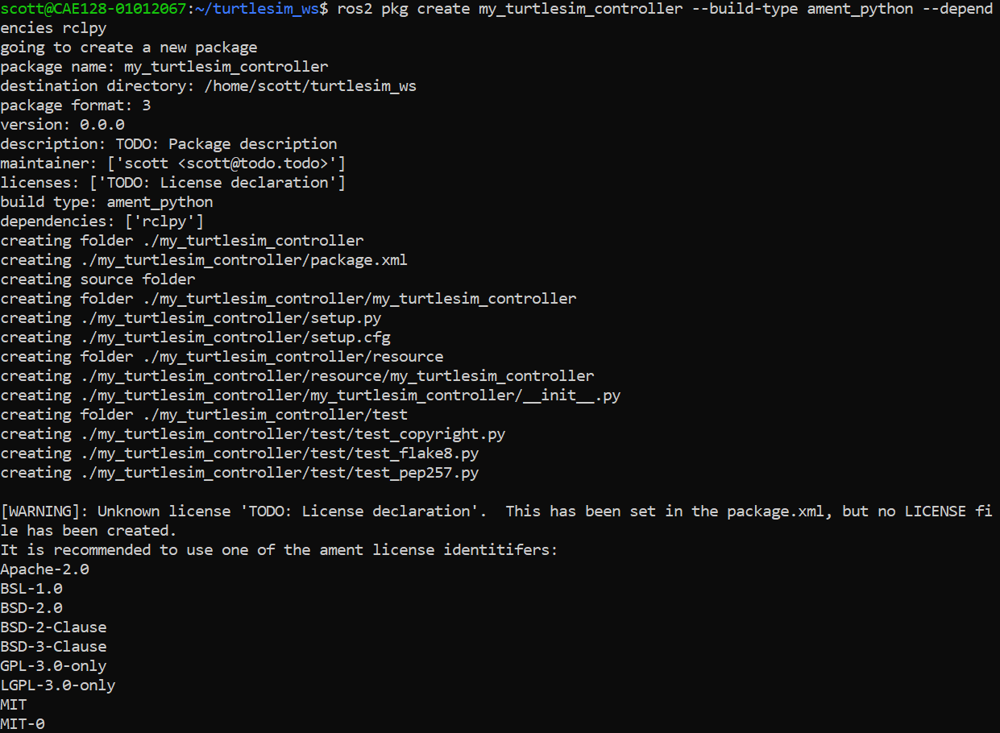
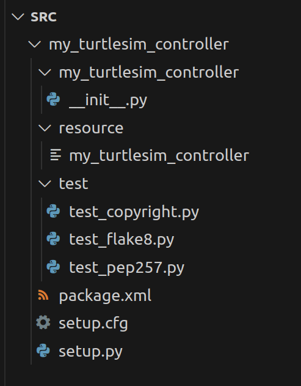
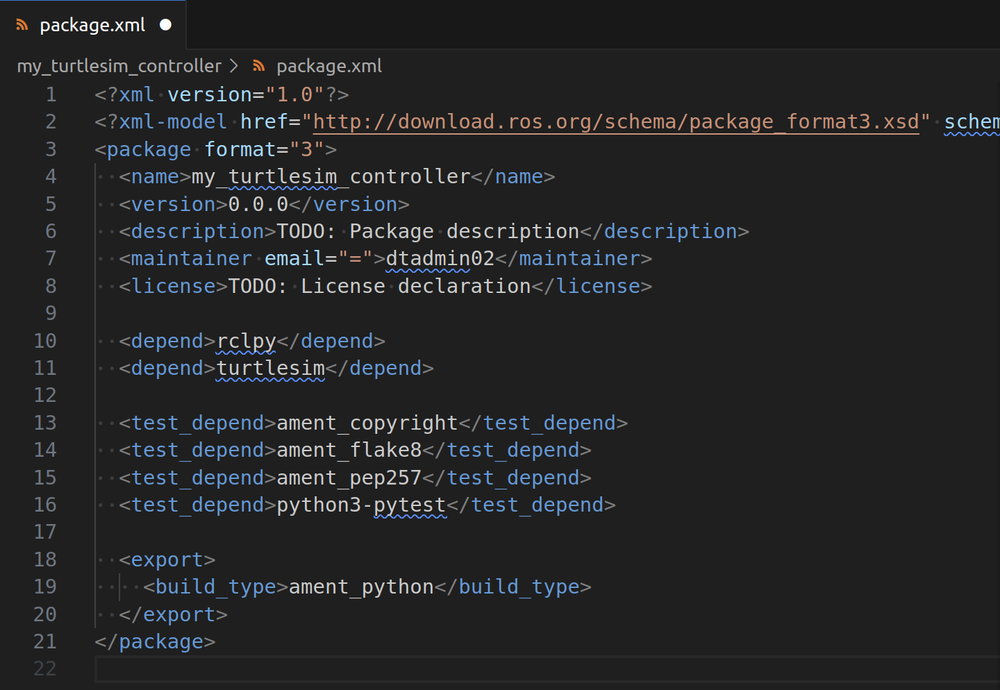
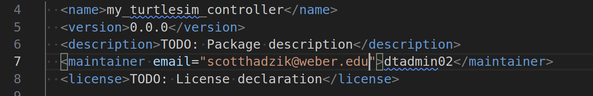
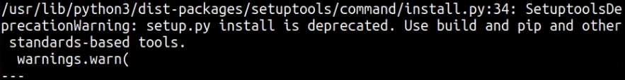
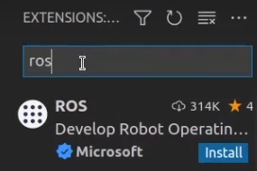

Create Turtlesim Controller Package¶
This guide walks you through creating a custom ROS 2 package containing a controller node for the turtlesim simulator.
1️⃣ Overview¶
In this tutorial, you will create a ROS 2 package called my_turtlesim_controller containing a node called node_turtle_controller.py that publishes velocity commands to control the turtle’s movement.
Note
Key Terminology:
Package (
my_turtlesim_controller): The organizational unit that contains all related files, dependencies, and nodesNode (
node_turtle_controller.py): The executable Python script that performs the actual work (subscribing, publishing, processing data)
This package will demonstrate the basic structure of a ROS 2 Python package and how nodes communicate via topics.
3️⃣ Create the Package¶
Use the ros2 pkg create command to create the my_turtlesim_controller package:

ros2 pkg create my_turtlesim_controller --build-type ament_python --dependencies rclpy

4️⃣ Understand the Generated Files¶
The command creates the following structure:
my_turtlesim_controller/
├── CMakeLists.txt # CMake build file (not used for Python packages)
├── package.xml # Defines package metadata and dependencies
├── resource/ # Stores package-specific resources
│ └── my_turtlesim_controller # Empty marker file for ament resource index
├── setup.py # Python build script
└── my_turtlesim_controller/ # Directory for Python scripts
Open up the src in Visual Studio Code to view:
cd ~/turtlesim_ws/src
code .

5️⃣ Add Dependencies¶
Edit package.xml to declare the package dependencies. For controlling turtlesim, include rclpy and turtlesim:
<depend>turtlesim</depend>

Add your email to the maintainer email line in package.xml:

6️⃣ Colcon Build¶
Navigate back to the turtlesim_ws directory:
cd ~/turtlesim_ws
Use colcon build to build the new package. Note and explanation:
Note
The colcon build command:
Identifies the packages in the
src/directory based on the presence ofpackage.xmlfiles.Resolves dependencies, determines build order, and invokes the appropriate build system (e.g., CMake for C++ or setuptools for Python).
colcon build
If you get the setup tools error, follow the instructions below:

pip3 install setuptools==58.2.0
7️⃣ Write the Python Node Code¶
Create a Python script for the turtle controller node. In the terminal navigate to the package’s python directory:
cd ~/turtlesim_ws/src/my_turtlesim_controller/my_turtlesim_controller
Create a file called node_turtle_controller.py:
Note
We prefix the filename with node_ to clearly indicate this is a ROS 2 node (an executable component) rather than a package or library module. This naming convention helps distinguish between:
Package:
my_turtlesim_controller(the container/directory)Node:
node_turtle_controller.py(the executable script that runs)
touch node_turtle_controller.py
Make the file executable:
chmod +x node_turtle_controller.py
Go back to src and open it in vscode:
cd ../..
code .
Install the ROS extension in vscode:

This is an example Python node (save as node_turtle_controller.py):
#!/usr/bin/env python3
import rclpy # Import the ROS 2 Python client library
from rclpy.node import Node # Import the Node base class for creating ROS 2 nodes
from geometry_msgs.msg import Twist # Import the Twist message type for velocity commands
class TurtleController(Node):
"""
A ROS 2 Node to control the turtle in turtlesim by publishing velocity commands.
"""
def __init__(self):
# Initialize the Node with the name 'turtle_controller'
super().__init__('turtle_controller')
# Create a publisher to the '/turtle1/cmd_vel' topic
self.publisher = self.create_publisher(Twist, '/turtle1/cmd_vel', 10)
# set up a timer that calls the move_turtle method every 0.5 seconds
self.timer = self.create_timer(0.5, self.move_turtle)
# Log a message indicating the node has been started
self.get_logger().info('Turtle Controller Node has started.')
def move_turtle(self):
"""
Publishes a velocity command to make the turtle move.
"""
twist = Twist()
twist.linear.x = 2.0
twist.angular.z = 1.0
self.publisher.publish(twist)
self.get_logger().info('Published velocity command.')
def main(args=None):
rclpy.init(args=args)
node = TurtleController()
try:
node.move_turtle()
rclpy.spin(node)
except KeyboardInterrupt:
pass
finally:
node.destroy_node()
rclpy.shutdown()
if __name__ == '__main__':
main()
8️⃣ Update setup.py¶
Update the setup.py file to add an entry point so the script is runnable as a console script:
entry_points={
'console_scripts': [
'turtle_controller = my_turtlesim_controller.node_turtle_controller:main',
],
},
9️⃣ Build the Package¶
Navigate back to the root of the workspace and build your package:
cd ~/turtlesim_ws
colcon build --packages-select my_turtlesim_controller
Note
If you use --symlink-install when developing Python packages, you won’t need to re-run colcon build after every code change.
🔟 Source the Workspace¶
source ~/turtlesim_ws/install/setup.bash
Note
If you added the source line to your .bashrc, you can instead run source ~/.bashrc to load the workspace.
⏸️ Test the my_turtlesim_controller Node¶
ros2 run turtlesim turtlesim_node
In another terminal:
ros2 run my_turtlesim_controller turtle_controller
In another terminal:
ros2 topic echo /turtle1/cmd_vel
In another terminal:
rqt_graph
The turtle should move in a circular motion based on the linear and angular velocities you defined.
Summary¶
You have successfully created a custom ROS 2 package that controls the turtlesim simulator. This demonstrates the fundamental concepts of ROS 2 package creation, node development, and topic-based communication.